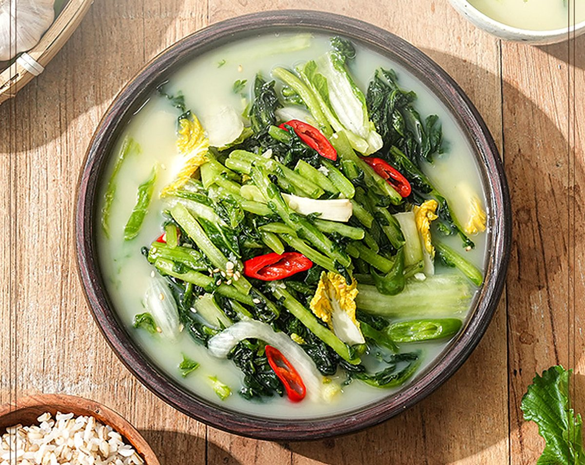

그리운밥상 페어링 ④ 백열무김치 × 칼국수
 연출 이미지연출 이미지
연출 이미지연출 이미지 연출 이미지
연출 이미지찬 바람이 불면 생각나는 칼국수. 뜨거운 국물과 부드러운 면을 한참 먹다 보면, 차갑고 아삭한 무언가가 그리워져요. 그 자리에 하얀 열무김치를 놓아 보세요.
 연출 이미지
연출 이미지반죽을 넓게 밀어 칼로 썰어 낸 국수는 최초의 한글 조리서 『음식디미방』에 ‘절면’이라는 이름으로 등장해요. 그 시절엔 밀가루가 귀해 잔칫날에나 먹던 귀한 음식이었어요.
 연출 이미지
연출 이미지한국전쟁 이후 밀가루가 흔해지면서 칼국수는 누구나 먹는 음식이 됐어요. 바닷가에선 바지락, 강원도에선 장칼국수, 경북에선 콩가루를 넣은 누른국수까지, 지역마다 맛이 달라요.

그리운밥상 백열무김치맵지 않은 하얀 열무김치라 칼국수 국물의 구수한 맛을 덮지 않아요. 한 입씩 번갈아 먹을수록 서로가 또렷해져요.
 그리운밥상 백열무김치
그리운밥상 백열무김치후루룩 넘어가는 부드러운 면 뒤에 아삭하게 씹히는 열무 줄기. 온도도 식감도 반대라 마지막 한 젓가락까지 물리지 않아요.
연출 이미지 그리운밥상 동치미 · 백열무김치
그리운밥상 동치미 · 백열무김치